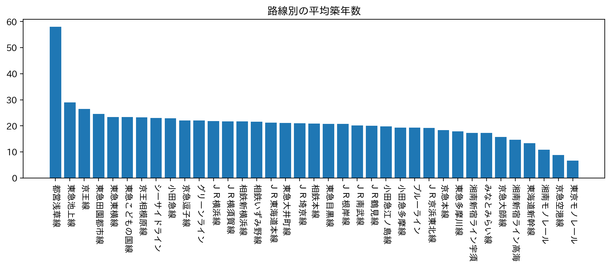

賃貸情報の分析
私の班では、物件数のデータをもとに五つの路線に絞って各自で賃貸情報の分析を行うことになった。
選択基準は、以下のブラフである。
このグラフをもとに比較的物件数も多く、普段利用しているＪＲ京浜東北線について分析を行うことにした。
また、次のグラフも良い判断材料になった。

平均築年数が低い部類なため、新しい物件も多いだろう。 分析を行う路線が定まったのでさらにＪＲ京浜東北線の中で条件を絞っていく。
このグラフの中から新子安駅を私はピックアップした。